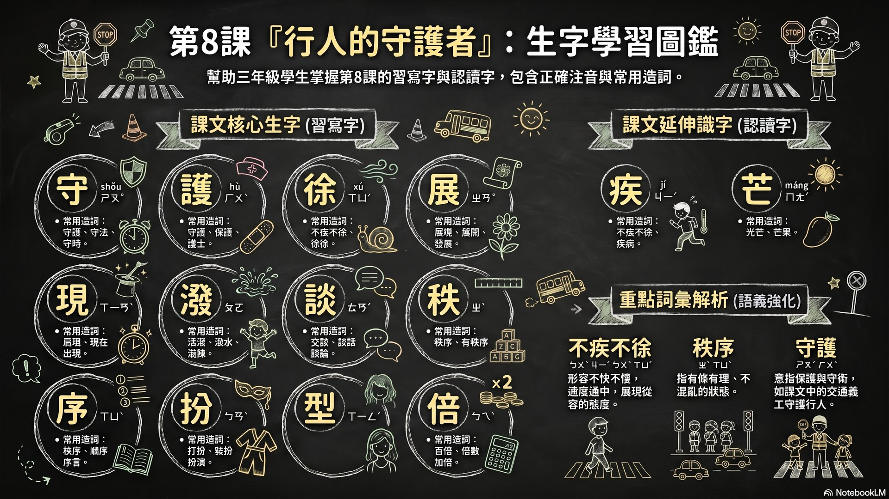
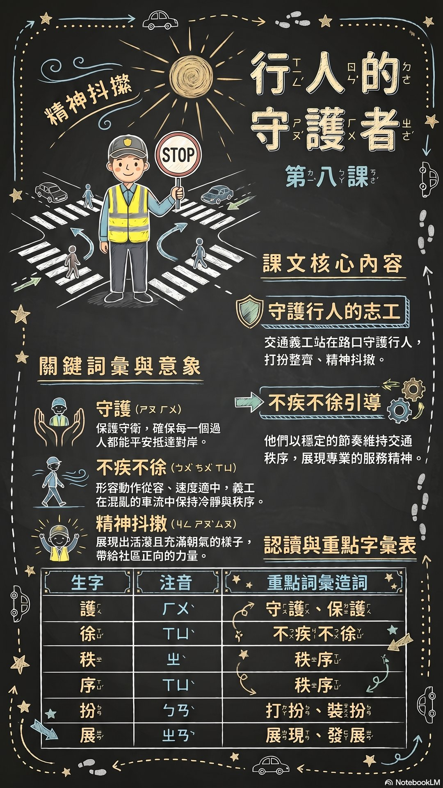
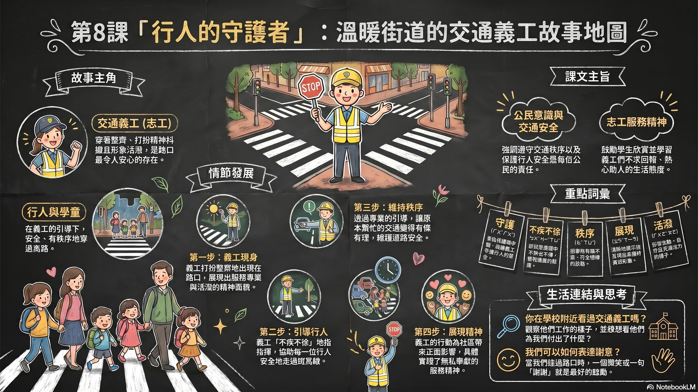

交通義工站在路口指揮交通、協助行人過馬路。他們打扮整齊、精神抖擻，不疾不徐地引導行人，展現活潑形象，維持交通秩序，為社區帶來正面影響。
生字卡

課文直式排版

故事地圖

NotebookLM 生成｜完整講解 L7-L10 課文內容、生字詞彙、重點句型
本課主題：公民意識・志工服務・交通安全
建議教學策略：先讓學生觀察圖片、進行預測，再帶入課文閱讀。生字教學建議結合造詞練習，重點詞彙可進行造句比賽。